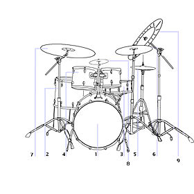

A drum kit—also called a drum set, trap set, or simply drums—is a collection
of drums and other percussion instruments, typically cymbals, which are set up
on stands to be played by a single player[1] with drumsticks held in both hands
and the feet operating pedals that control the hi-hat cymbal and the beater for
the bass drum. A drum kit consists of a mix of drums (categorized classically as
membranophones, Hornbostel-Sachs high-level classification 2) and idiophones
most significantly cymbals but also including the woodblock and cowbell
(classified as Hornbostel-Sachs high-level classification 1).In the 2000s, some
kits also include electronic instruments and both hybrid and entirely electronic
kits are used.
A standard modern kit (for a right-handed player), as used in popular music and
taught in music schools, contains:
A snare drum, mounted on a stand, placed between the player's knees and played
with drum sticks (which may include rutes or brushes)
A bass drum, played by a pedal operated by the right foot, which moves a
felt-covered beater
One or more toms, played with sticks or brushes.
A hi-hat (two cymbals mounted on a stand), played with the sticks, opened and
closed with left foot pedal
One or more cymbals, mounted on stands, played with the sticks.

All of these are classed as non-pitched percussion, allowing for the music to be
scored using percussion notation, for which a loose semi-standardized form
exists for the drum kit. If some or all of them are replaced by electronic
drums, the scoring and most often positioning remains the same, allowing a
standard teaching approach. The drum kit is usually played while seated on a
drum stool or throne. The drum kit differs from instruments that can be used to
produce pitched melodies or chords, even though drums are often placed musically
alongside others that do, such as the piano or guitar. The drum kit is part of
the standard rhythm section used in many types of popular and traditional music
styles ranging from rock and pop to blues and jazz. Other standard instruments
used in the rhythm section include the electric bass, electric guitar and
keyboards.
Many drummers extend their kits from this basic pattern, adding more drums, more
cymbals, and many other instruments including pitched percussion. In some styles
of music particular extensions are normal, for example double bass drums in
heavy metal music and the enlarged kits used by some progressive rock drummers,
which may include unusual instruments such as gongs. Some performers, such as
some rockabilly drummers, use small kits that omit elements from the basic
setup. Some drum kit players may have other roles in the band, such as providing
backup vocals, or less commonly, lead vocals.